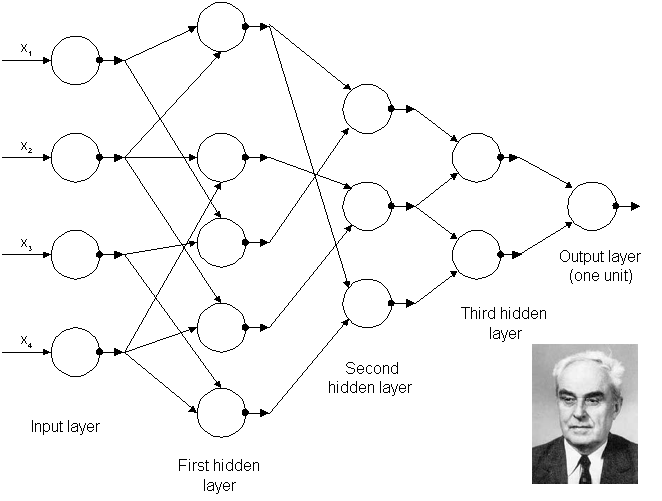

Entendendo como funcionam as Redes Neurais Artificiais
Introdução
Nesta última década, testemunhamos uma explosão de interesse na Aprendizagem de Máquina (Machine Learning).
À medida que o mundo se transforma digitalmente, interações entre seres humanos e aplicativos de computador
se tornam mais frequentes e sofisticadas, com exemplos como detecção de spam, reconhecimento facial em smartphones e
carros autônomos.
Em sua essência, a Aprendizagem de Máquina consiste na utilização de algoritmos para extrair informações de dados
brutos e representá-los por meio de modelos matemáticos. Esses modelos, por sua vez, são empregados para fazer
inferências a partir de outros conjuntos de dados. Enquanto há uma variedade de algoritmos disponíveis para esse
propósito, um tipo se destaca: as redes neurais artificiais.
O crescente entusiasmo por Machine Learning é evidenciado pelo aumento de conferências, cursos e
consultas no Google sobre o tema. No entanto, muitos ainda confundem aspirações com possibilidades
reais. A revolução da Aprendizagem de Máquina é impulsionada por três principais ingredientes:
Big Data, Processamento Paralelo em GPUs e Modelos de Aprendizagem de Máquina.
Neste estudo, exploraremos a Inteligência Artificial, as Redes Neurais Artificiais e o Aprendizado de Máquina,
para entender suas implicações para um mundo cada vez mais interconectado e orientado por dados.
Junte-se a mim nesta jornada pela vanguarda da tecnologia.
Evolução do tema ao longo dos anos
A história das redes neurais começou com a busca por replicar o aprendizado do cérebro humano.
Em 1943, Warren McCulloch e Walter Pitts criaram um modelo computacional de neurônios artificiais.
O desenvolvimento da inteligência artificial (IA) e redes neurais foi impulsionado pelo Projeto de
Pesquisa de Verão de Dartmouth em 1956.
Frank Rosenblatt introduziu o Perceptron nos anos 50, mas ele tinha limitações. Bernard Widrow e Marcian
Hoff criaram modelos ADALINE e MADALINE na década de 1950. Apesar do entusiasmo inicial, a IA enfrentou
desafios e financiamento reduzido durante o "Inverno da IA". A virada veio com o modelo de John Hopfield
em 1982 e a primeira conferência internacional sobre redes neurais em 1985.
Nos anos 80, surgiram redes de múltiplas camadas e o algoritmo de retropropagação. Abaixo podemos ver
uma linha do tempo que nos mostra os principais pontos dessa história.

Hoje, redes neurais são cruciais para a IA, com destaque para o Deep Learning. Estamos testemunhando avanços empolgantes na próxima fase dessa história.
O Que São Redes Neurais Artificiais Profundas ou Deep Learning?
A Aprendizagem Profunda, também conhecida como Deep Learning, é uma subárea da Aprendizagem de Máquina
que utiliza algoritmos para imitar o processamento realizado pelo cérebro humano. No cerne dessa abordagem
estão as Redes Neurais Artificiais Profundas, que desempenham um papel fundamental no aprendizado profundo.
Em sua essência, o aprendizado profundo emprega camadas de neurônios matemáticos para processar informações,
compreender a linguagem humana e reconhecer objetos visualmente. Cada camada recebe informações da camada
anterior, com a primeira sendo a camada de entrada e a última, a camada de saída. As camadas intermediárias
são chamadas de camadas ocultas e cada uma delas utiliza algoritmos simples, frequentemente contendo funções de ativação.

As aplicações da aprendizagem profunda têm se destacado nos campos de visão computacional, reconhecimento de fala, processamento de linguagem natural e identificação de áudio. A base dessa abordagem é a ideia de que sistemas computacionais podem ser projetados para funcionar de maneira semelhante ao cérebro humano.
Arquitetura da primeira rede profunda conhecida treinada por Alexey Grigorevich Ivakhnenko em 1965.
Atualmente, a Aprendizagem Profunda é fundamental em áreas como Processamento de Big Data e Inteligência Artificial, desempenhando um papel crucial na construção de sistemas inteligentes e autônomos. O futuro promete uma IA cada vez mais sofisticada, e aqueles que dominarem essa tecnologia estarão preparados para liderar a próxima era da revolução tecnológica.
A arquitetura das Redes Neurais Artificiais
Para desenvolver um modelo de rede neural e explorar sua arquitetura, é crucial compreender a terminologia associada a esse campo. Vamos examinar a rede a seguir como um ponto de partida:
A camada mais à esquerda, onde os dados de entrada entram na rede, é denominada camada de entrada.
Os neurônios nesta camada são chamados de neurônios de entrada.
A camada mais à direita, é chamada de
camada de saída. Os neurônios nessa camada são chamados de neurônios de saída.
As camadas entre a camada de entrada e a camada de saída são referidas como camadas ocultas.
O termo "oculto" simplesmente significa que essas camadas não são nem camadas de entrada nem camadas
de saída. Uma rede pode ter uma ou várias camadas ocultas.

As principais arquiteturas
Existem várias arquiteturas de redes neurais, cada uma projetada para resolver tipos específicos de problemas e tarefas de aprendizado. Abaixo, vamos explorar algumas das arquiteturas de redes neurais mais proeminentes:
-
Redes Multilayer Perceptrons (MLPs)
As MLPs são uma das arquiteturas mais básicas e amplamente utilizadas em redes neurais profundas. Elas são compostas por múltiplos neurônios, conhecidos como Perceptrons, organizados em camadas. Uma MLP típica possui uma camada de entrada, uma ou mais camadas ocultas e uma camada de saída.
-
Redes Neurais Convolucionais (CNNs)
As CNNs são especialmente projetadas para processar dados de imagem. Elas são compostas por camadas de convolução, que são capazes de aprender características hierárquicas de imagens. As CNNs são amplamente aplicadas em tarefas de visão computacional, como classificação de imagem, reconhecimento de objetos e segmentação de imagem.
-
Redes Neurais Recorrentes (RNNs)
As RNNs são ideais para lidar com dados sequenciais, como linguagem natural, séries temporais e áudio. Elas possuem loops de feedback que permitem que informações de etapas anteriores afetem as etapas futuras. Isso as torna adequadas para tarefas como tradução automática, análise de sentimento de texto e previsão de séries temporais.
-
Long Short-Term Memory (LSTM)
LSTMs são uma variação das RNNs que resolvem o problema do "vanishing gradient", que ocorre durante o treinamento de RNNs profundas. Elas são capazes de manter informações de estados anteriores por um longo período, tornando-as eficazes em tarefas como geração de texto e análise de séries temporais.
-
Redes de Hopfield
Redes de Hopfield são usadas para armazenar memórias como mínimos de energia. Elas consistem em unidades binárias com conexões recorrentes simétricas. Essas redes são úteis para recuperação de memória e resolução de problemas combinatórios.
-
Máquinas de Boltzmann
Máquinas de Boltzmann são redes neurais estocásticas que modelam distribuições de probabilidade. Elas são adequadas para uma ampla variedade de tarefas, incluindo reconhecimento de padrões e processamento de linguagem natural.
-
Deep Belief Network
Deep Belief Networks são compostas por pilhas de Restricted Boltzmann Machines (RBMs). Elas são usadas para reconhecimento de padrões, agrupamento e geração de dados. Essas redes são aplicadas em várias áreas, incluindo processamento de linguagem natural e visão computacional.
-
Generative Adversarial Network (GAN)
GANs são redes compostas por duas partes, uma geradora e uma discriminadora, que competem entre si. Elas são usadas para gerar dados realistas e têm aplicações em geração de imagens e sons.
-
Deep Neural Network Capsules
As Capsules são uma arquitetura de rede neural relativamente recente proposta por Geoffrey Hinton. Elas permitem uma modelagem hierárquica de relações em dados, embora ainda estejam em desenvolvimento.
Essas são apenas algumas das principais arquiteturas de redes neurais disponíveis. A escolha da arquitetura certa depende da natureza da tarefa e dos dados em questão, e muitas vezes, combinações dessas arquiteturas são usadas para abordar problemas complexos de aprendizado de máquina e inteligência artificial. À medida que a pesquisa avança, novas arquiteturas continuam a ser desenvolvidas, expandindo o escopo e as capacidades das redes neurais artificiais.